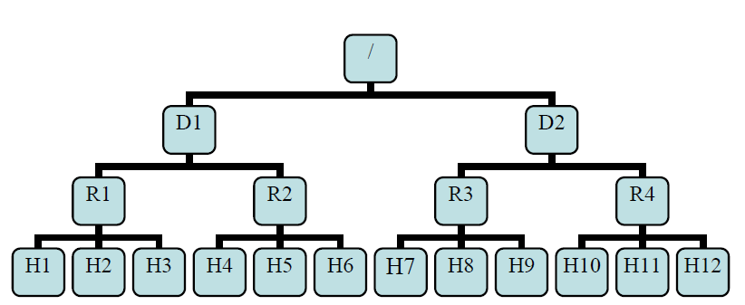

Hadoop Configuration Tuning¶
Rack Awareness¶
Typically large Hadoop clusters are arranged in racks and network traffic between different nodes with in the same rack is much more desirable than network traffic across the racks. In addition NameNode tries to place replicas of block on multiple racks for improved fault tolerance. Hadoop lets the cluster administrators decide which rack a node belongs to through configuration variable net.topology.script.file.name. When this script is configured, each node runs the script to determine its rack id. A default installation assumes all the nodes belong to the same rack. This feature and configuration is further described in PDF attached to HADOOP-692
- distance(/D1/R1/H1,/D1/R1/H1)=0 same datanode
- distance(/D1/R1/H1,/D1/R1/H2)=2 same rack different datanode
- distance(/D1/R1/H1,/D1/R1/H4)=4 same DataCenter different rack
- distance(/D1/R1/H1,/D2/R3/H7)=6 different DataCenter
Assumption¶
Bandwidth in/out of a subtree may be less than the total bandwidth of machines within the subtree.
Replica Placement¶
The block replica placement policy is intended to get a tradeoff between minimizing the write cost and maximizing data reliability and availability, and aggregate read bandwidth.
Creating New Block¶
First replica on local node
Second replica on different node at same rack
Third replica on different node at different rack
- Other replicas following
- One replica at most on each node
- if replicas smaller that racks*2, no more than 2 replicas on same rack
Replicate Existing Block¶
- If one replica exists, put 2nd replica on different rack
- If two replica on same rack, put 3rd replica on different rack
- If two replica on different rack, put 3rd replica on the same rack as replica 1
- If available replica more than 3, put randomly.
Topology Script¶
- Add parameter
net.topology.script.file.nameto core-site.xml - Write script file
sample c script
1 2 3 4 5 6 7 8 | int main(int argc , char *argv[]){
for(int i=1 ;i< argc; i++){
char* ipStr = argv[i];
// 找到ip对应的rack设置,下面的
cout<<"/rack1/"<<i<<" ";
}
cout<< endl;
}
|
sample python script
1 2 3 4 5 6 7 8 9 10 11 12 13 14 15 16 | import sys
from string import join
DEFAULT_RACK = '/default/rack0';
RACK_MAP = { '10.72.10.1' : '/datacenter0/rack0',
'10.112.110.26' : '/datacenter1/rack0',
'10.112.110.27' : '/datacenter1/rack0',
'10.112.110.28' : '/datacenter1/rack0',
'10.2.5.1' : '/datacenter2/rack0',
'10.2.10.1' : '/datacenter2/rack1'
}
if len(sys.argv)==1:
print DEFAULT_RACK
else:
print join([RACK_MAP.get(i, DEFAULT_RACK) for i in sys.argv[1:]]," ")
|
sample bash shell script
1 2 3 4 5 6 7 8 9 10 11 12 13 14 15 16 17 18 19 | HADOOP_CONF=/etc/hadoop/conf
while [ $# -gt 0 ] ; do
nodeArg=$1
exec< ${HADOOP_CONF}/topology.data
result=””
while read line ; do
ar=( $line )
if [ “${ar[0]}” = “$nodeArg” ] ; then
result=”${ar[1]}”
fi
done
shift
if [ -z “$result” ] ; then
echo -n “/default/rack “
else
echo -n “$result “
fi
done
|